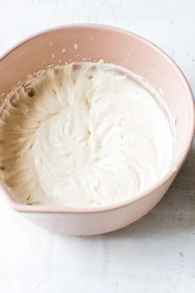

Whipped Cream

Description
This yogurt whipped cream is so good with strawberries, but if they're not in season, serve it over another
fruit like bananas, raspberries, or peaches. It is great on top of pies, crumbles, waffles, and more.
Ingredients
- 2 tablespoons suger
- 1 ⅓ cup chilled whipping cream
- ½ teaspoon pure vanilla extract
- ⅓ cup organic 0% plain Greek yogurt
Steps
- Place the sugar into the mixing bow and add the chilled whipping cream and vanilla extract.
- Using a hand mixer, whisk at medium speed until the cream and vanilla reaches stiff peks, about 2 to 3 minutes;
whisk in the yogurt for 15 seconds or until incorporated.